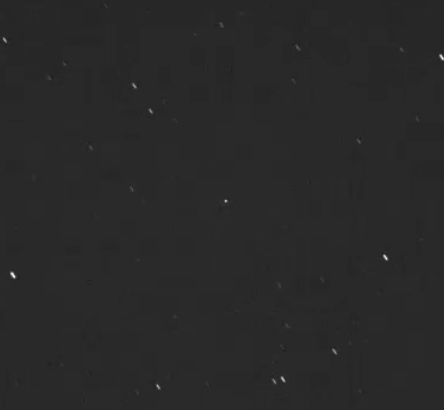

Skip to content
Shenton Park Observatory
Home
Research & Results
Journal archive
Images archive
← Journal archive
Imaging satellites
13 September 2012
· Astrophoto Posts
Click to view movie:

Previous
← A fast mover ...
Next
D21 gets an upgrade ... →
×